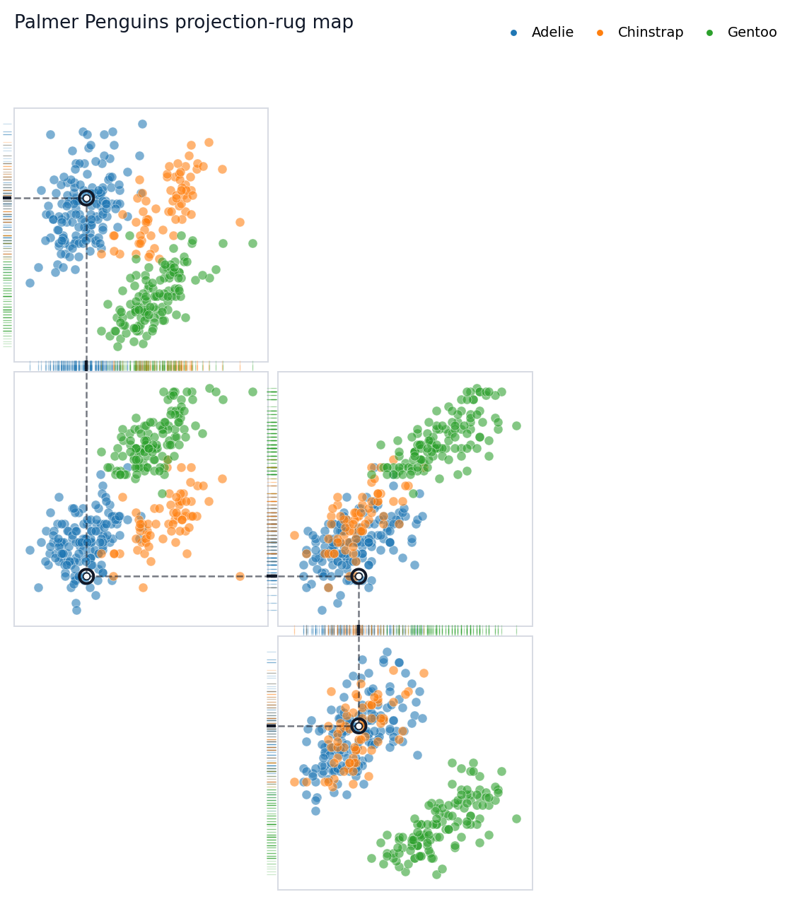

rp = load(
penguins,
projections=projections,
layout=layout,
group="species",
highlight=12,
)
fig = rp.plot(title="Follow one penguin across projections")Rugprint
Sparse projection-rug maps for multivariate data.
Rugprint makes a compact multivariate fingerprint: selected 2D scatterplot projections arranged as a sparse map, with edge rugs showing how the same observations collapse onto one-dimensional axes.
Before reducing a complex state to one number, look across several measurements at once.
The Picture
This is the core idea. The highlighted penguin is tracked through a chain of projection panels. Inside each panel, dashed local guides connect the point to its x and y rugs. Between neighboring panels, dotted connectors pass through rug gutters where the panels share a variable.

Explore The API And Tutorials
The API reference explains the main inputs and outputs: load(...), the Rugprint object, .plot(), .with_highlight(...), .rank_pairs(...), and the one-shot rugprint(...) wrapper.
The longer hands-on walkthrough is the Palmer Penguins tutorial. Start there if you want to adapt the plot for your own dataset.
Make Your Own Rugprint
The object-oriented API is the recommended path. Load a dataframe into a Rugprint object, then call .plot().
A projection is a pair of column names: (x_column, y_column). A layout maps each projection to a sparse grid coordinate: (row, column). Missing cells remain empty, so the result does not have to look like a pairplot matrix.
Choosing Projection Pairs
rank_pair_separation(...) can suggest useful projection pairs. It ranks feature pairs by the mean distance between group centroids. It is a practical visual helper, not a statistical test.
rank_pair_separation(penguins, features, group="species")One-Shot Plotting
For scripts, the one-shot wrapper creates a Rugprint object internally and immediately plots it.
fig = rugprint(
penguins,
projections=projections,
layout=layout,
group="species",
highlight=0,
title="One-shot Rugprint call",
)Install
From this repository:
pip install git+https://github.com/sangyu/rugprint.gitFor local development:
git clone https://github.com/sangyu/rugprint.git
cd rugprint
pip install -e .If your pip is old and editable install fails, upgrade pip or install normally from the repository.
Credit
Rugprint is inspired by Edward R. Tufte’s projection/rug display idea in The Visual Display of Quantitative Information (Graphics Press, 1983).
For People New To nbdev
This repo uses nbdev 3. The source of truth is the notebooks in nbs/:
nbs/index.ipynbgenerates this README and the docs landing page.nbs/00_core.ipynbexports the Python package code torugprint/core.py.nbs/01_tests.ipynbcontains executable tests for CI.nbs/tutorial_penguins.ipynbrenders the Palmer Penguins tutorial for GitHub Pages.
Common commands:
nbdev_export # export package code from notebooks
nbdev_test # run notebook tests
nbdev_docs # build the docs siteIn this environment, the equivalent Python-module commands are used because the nbdev shell scripts are not on PATH.